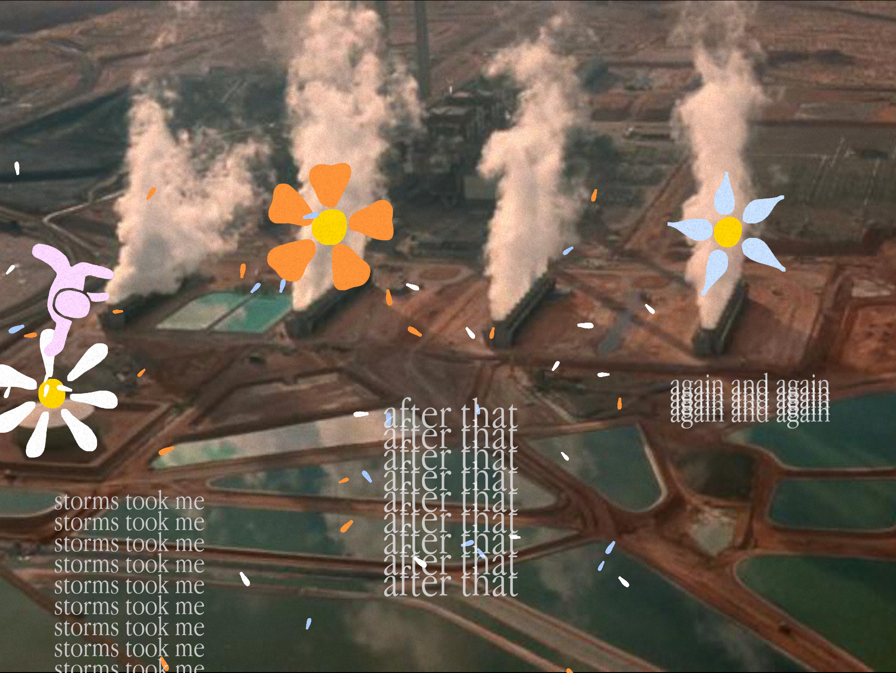
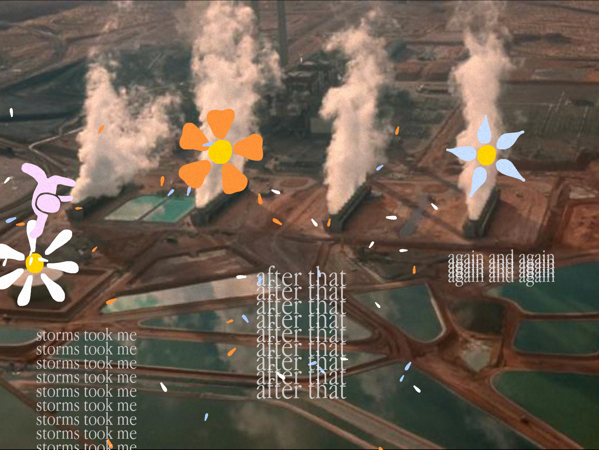

home
about me
some things i made
- abigail
- a machine to devour us all
- pigeon lady
- this journey
- you, the memorious
- the king of wands
- the reversed queen of wands
- ode to american football
- spencer (from the hit 2007 nickelodeon teen sitcom icarly)'s ultimate rat race!
- portrait of a detestable beast
- scratch
- garden at crab nebula
- psychopomp
- and i dreamt we were dancing in a maze
my itch page
my bluesky
my email
THIS JOURNEY
This Journey is a game made in a weekend. With it's art style that constrasts simple flat pastel characters and flowers with the oppressive industrial mega structures in the background, This Journey is a playable poem about losing and finding love through life.In this project I did most parts of the development, expect I borrowed industrial photographs for the backgrounds and Godspeed You! Black Emperor's Storm for the soundtrack.
Click here to play This Journey!
 
